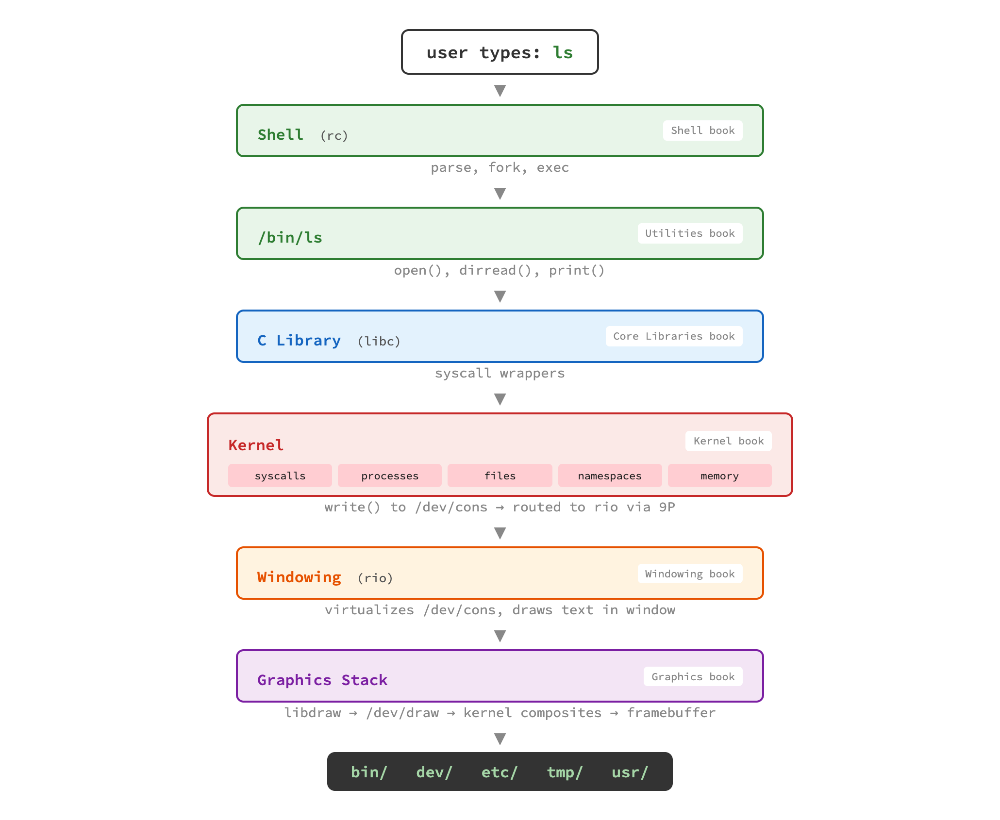

ls
What happens when you type ls and press Enter?
This simple command travels through almost every layer of the
operating system, touching code described in 7 different books
of the Principia Softwarica series.
In Plan 9, the path is remarkably clean.
The shell parses and executes the command,
ls calls open() and dirread()
through libc, the kernel handles the system calls and file operations,
then the output flows back up through the kernel to rio (the windowing
system), which draws the text using the graphics stack.

Each colored box corresponds to a book in the series.
The labels on the right show which book covers that layer.
Notice how the output of ls goes through the kernel
twice: once for the write() system call, and
again when rio talks to the graphics device via /dev/draw.
The same journey on Linux involves significantly more layers and more code. The terminal emulator (xterm), the X server, the PTY/TTY subsystem, the input subsystem — each adds complexity that Plan 9 avoids through its unified design.
The LOC annotations on the Linux diagram show why it is impractical to explain a full Linux system in a book series: the components are individually larger than the entire Plan 9 system combined.